Class Element
- Namespace
- OpenMEPRevit.Element
- Assembly
- OpenMEPRevit.dll
Base class for most persistent data within a Revit document.
public class Element- Inheritance
-
Element
- Inherited Members
Remarks
The data in a Revit document consists primarily of a collection of elements. An element usually corresponds to a single component of a building or drawing, such as a wall, door, or dimension, but it can also be something more abstract, like a wall type or a view. Every element in a document has a unique ID, represented by the ElementId class.
Methods
ConnectorSystemType(Element)
Returns the MEP System Type from connectors of the element
public static dynamic? ConnectorSystemType(Element element)Parameters
elementElementthe element of mep
Returns
- dynamic
system type from connector of element
Examples
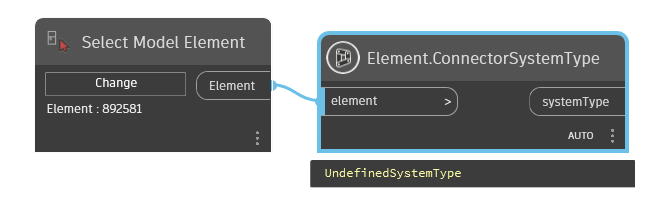
GetConnectedElements(Element)
This method takes in an element and returns a list of elements that are connected to it.
public static List<Element> GetConnectedElements(Element elem)Parameters
elemElementthe element need get connected
Returns
- List<Element>
the list elements connected with this element
Examples
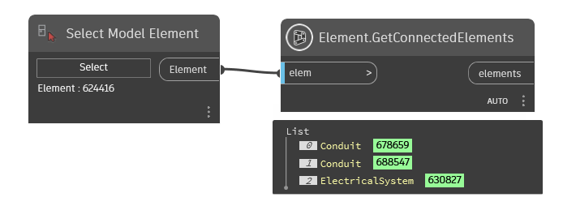
GetDocument(Element)
Returns the Document in which the Element resides
[NodeCategory("Query")]
[MultiReturn(new string[] { "Revit Document", "Dynamo Document" })]
public static Dictionary<string, object?> GetDocument(Element element)Parameters
elementElementthe element
Returns
Examples
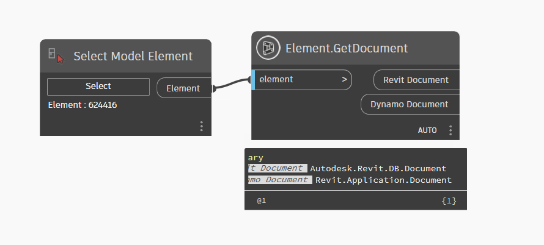
GetLevel(Element?)
Return Level Of Element
public static Element? GetLevel(Element? element)Parameters
elementElementelement to get level
Returns
- Element
level of element
Examples
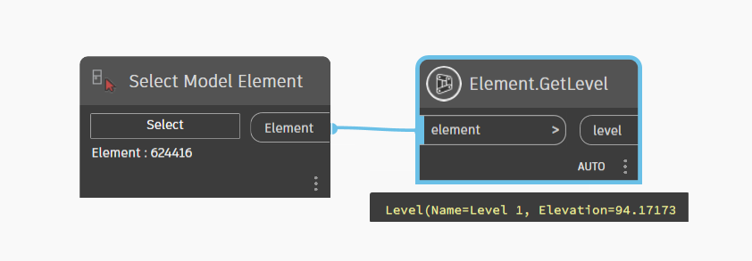
GetLocation(Element?)
Return A Location Of Element
public static Point? GetLocation(Element? element)Parameters
elementElement
Returns
- Point
location of element
Examples
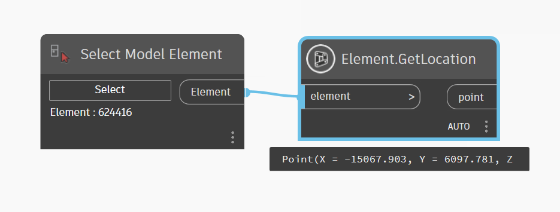
MoveElement(Element, Point)
Move element to new location
[NodeCategory("Action")]
public static Element MoveElement(Element element, Point newLocation)Parameters
elementElementelement to move
newLocationPointtranslate
Returns
- Element
the element moved
Examples
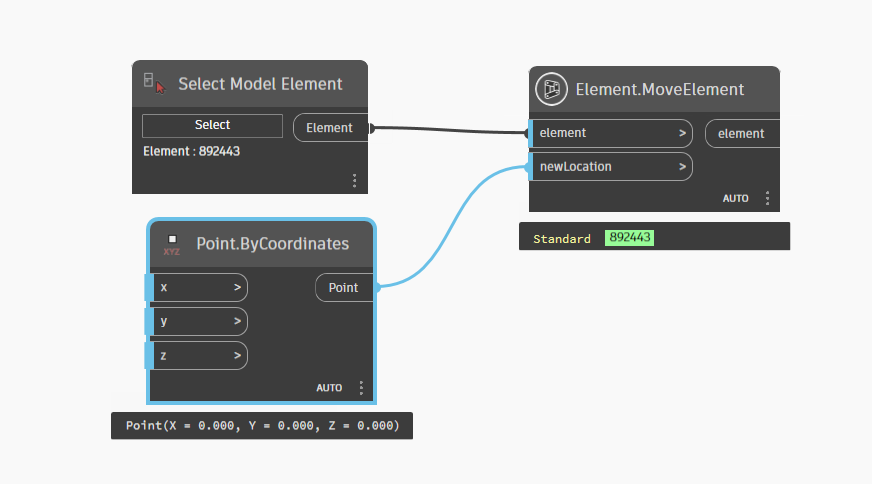
MoveElements(List<Element>, List<Point>)
Move the list collection of elements to new location
[NodeCategory("Action")]
public static List<Element> MoveElements(List<Element> elements, List<Point> newLocations)Parameters
elementsList<Element>the collection elements want move
newLocationsList<Point>the collection translate
Returns
- List<Element>
the collection of elements moved
Examples
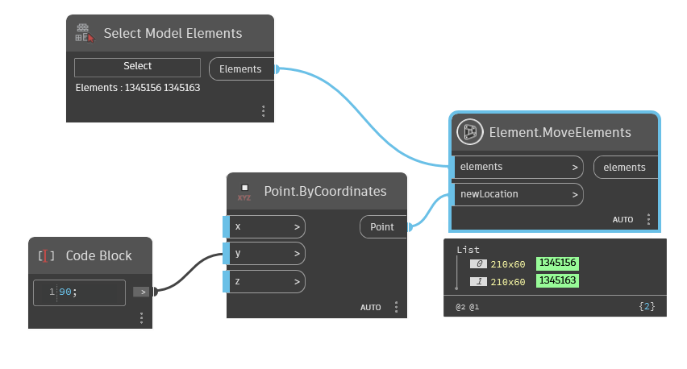
Rotate(Element, Line, double)
Set Rotate of family instances by line
[NodeCategory("Action")]
public static Element Rotate(Element element, Line lineAxis, double angle)Parameters
elementElementthe element
lineAxisLineLine Axis
angledoubleangle to rotate(Degrees)
Returns
- Element
family instance
Examples
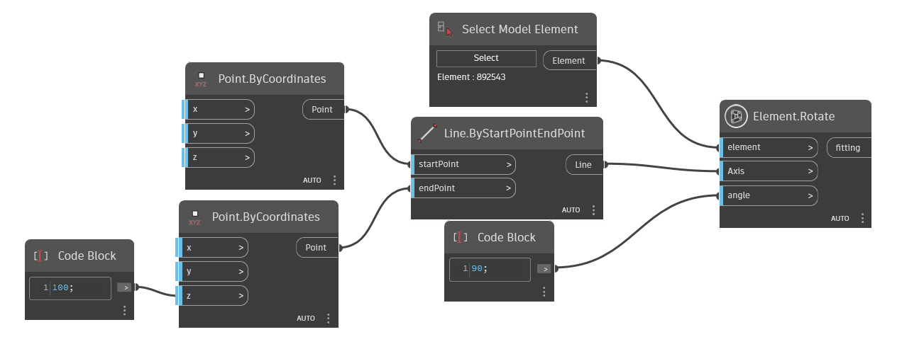
Rotate(Element, Vector, double)
Set Rotate of fitting By Vector
[NodeCategory("Action")]
public static Element Rotate(Element element, Vector vectorAxis, double angle)Parameters
elementElementthe element
vectorAxisVectorDirection Axis
angledoubleangle to rotate(Degrees)
Returns
- Element
family instance
Examples
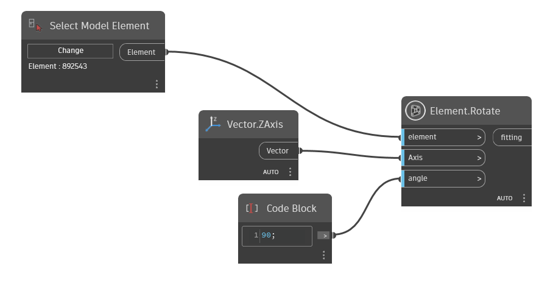
RotateMultiple(List<Element>, List<Line>, List<double>)
Set Rotate multiple family instances This will be help save time when you have a lot of elements to rotate because just one transaction
[NodeCategory("Action")]
public static List<Element> RotateMultiple(List<Element> elements, List<Line> lineAxis, List<double> angles)Parameters
elementsList<Element>the list collection of elements
lineAxisList<Line>the collection line Axis
anglesList<double>the collection angle to rotate(Degrees)
Returns
- List<Element>
collection of list elements rotated
Examples
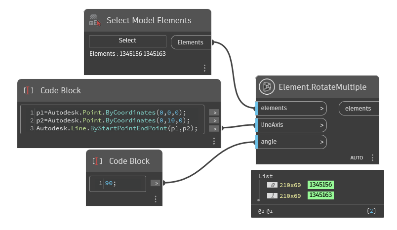
RotateMultiple(List<Element>, List<Vector>, List<double>)
Set Rotate multiple elements by vector
[NodeCategory("Action")]
public static List<Element> RotateMultiple(List<Element> elements, List<Vector> vectorAxis, List<double> angles)Parameters
elementsList<Element>the collection of elements
vectorAxisList<Vector>the collection of direction Axis
anglesList<double>the collection angle to rotate(Degrees)
Returns
- List<Element>
collection of list elements rotated
Examples
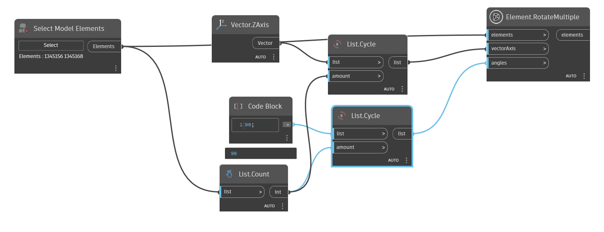
System(Element)
The system of the MEP element belong to.
public static Element? System(Element element)Parameters
elementElementthe element to get system
Returns
- Element
mep system of element
Examples
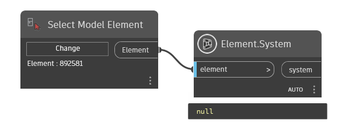
SystemType(Element)
return type of MEP System
public static Element? SystemType(Element element)Parameters
elementElementthe element of mep
Returns
- Element
system type of element from connector
Examples
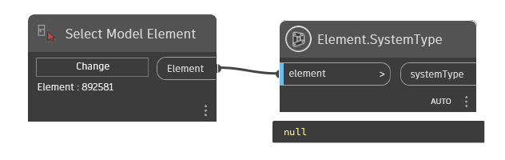